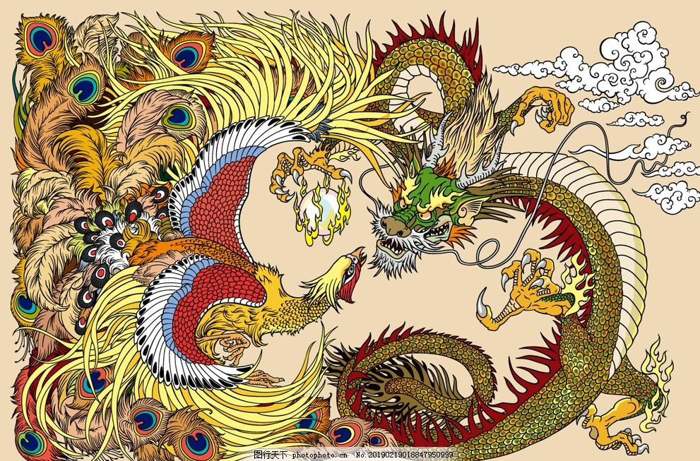

《祁阳贾侯神道碑》记载：“乾坤破碎、溟涬茫昧……应龙腾举托天开，垂云矫翼廓清氛”，记载远古时天地破灭，元气湮灭后应龙重开天地，恢复人间元气之事 ，而此状态于《云笈七签》中被形容为“元气溟涬……人为万物，不知东西南北，人化为禽兽，禽兽化为人。真人乃在元气之上，仙人乃在绝域无崖之际，道人隐居” 。 无独有偶，不仅有应龙开天记载，还有其创造大地的神话传说。《全唐文》中记载长孙无忌曾上表说：“应龙辟壤，致宅土于遐年……天之祚圣，复在于兹”，称应龙开辟了世人所居的大地 。在“盘古神话的起源故乡”桐柏一带，有着《应龙生盘古》的传说，说应龙生下了盘古。 应龙除了拥有创世之力、救世之功外，还拥有灭世之能，其威能远超钟山烛龙借助火精而得的昼夜变换之力。《钱塘集》记载当应龙含怒飞天时，能够直接令当空的烈日消失，同时使天地万物抵达终结的状态，称为“天地昏蒙而万物否”，否指“变坏、灭绝” 。 《阮籍集》说当应龙伸展身姿，可以充塞整个宇宙，但当她收缩身形之时，却可以进入无间之间。而其常态则是龙首枕于星宿、张宿，龙尾挂于柳宿、井宿，身体倚靠于太微垣三台。
